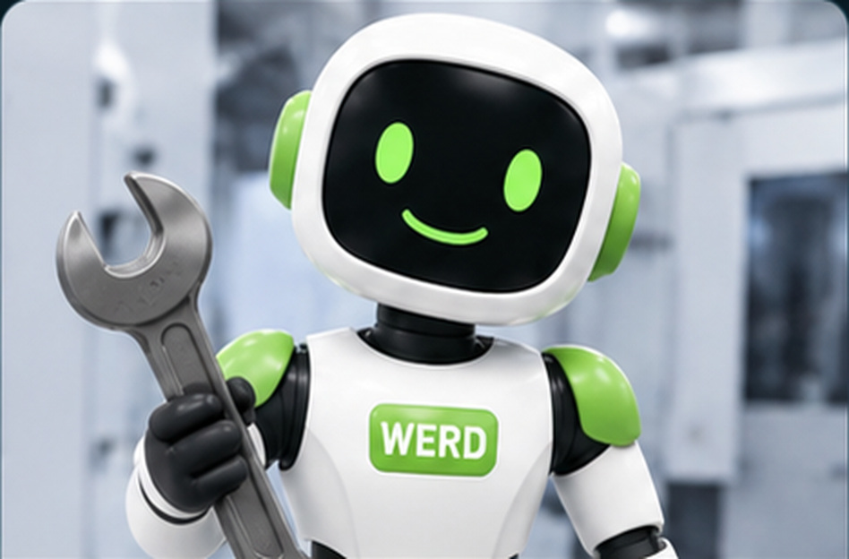
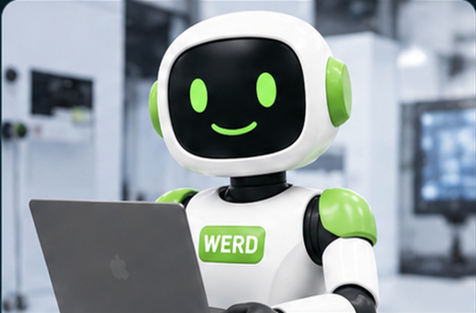
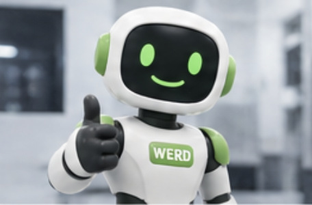
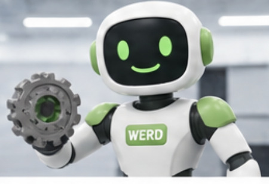
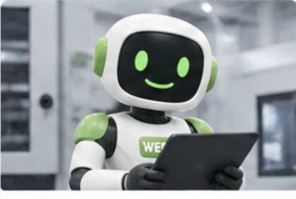
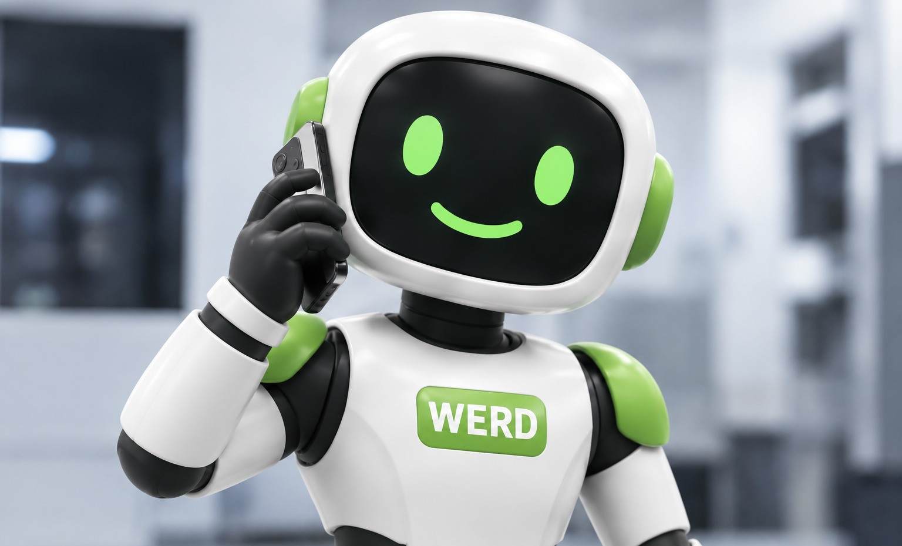
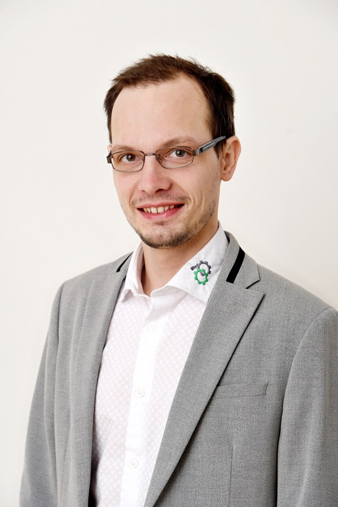
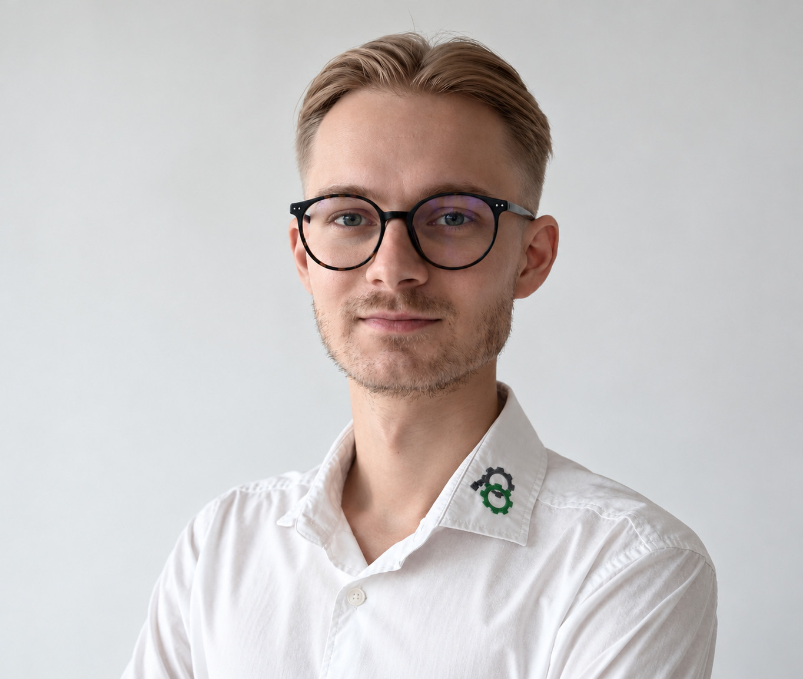

Servis a opravy
Mechanické a elektrické opravy CNC strojů, řešení poruch a zprovoznění.
Odborný servis, diagnostika, opravy a údržba CNC strojů. Pomáháme vracet výrobu rychle a bezpečně do provozu.
Od nalezení závady až po zprovoznění stroje. Praktická řešení pro spolehlivý provoz vašich CNC technologií.

Mechanické a elektrické opravy CNC strojů, řešení poruch a zprovoznění.

Vyhledání příčin závad řídicích systémů, pohonů a mechanických celků.

Konzultace a návrhy technických úprav pro další spolehlivý provoz.

Pomoc s identifikací a výběrem vhodných náhradních dílů.

Preventivní údržba, kontrola stavu strojů a přesné seřízení.

Pomůžeme najít řešení, které dává smysl technicky i provozně.
Společnost WERD s.r.o. se specializuje na odborný servis, opravy, údržbu a prodej CNC strojů. Naše zkušenosti v oboru sahají do roku 2015. Díky technickým znalostem a individuálnímu přístupu pomáháme zákazníkům udržovat jejich výrobní technologie v maximální provozuschopnosti.
Zajišťujeme diagnostiku závad, mechanické i elektrické opravy, pravidelnou údržbu, seřizování a modernizace CNC technologií. Specializujeme se zejména na stroje s řídicími systémy FANUC, HEIDENHAIN a SIEMENS.
Vedle servisních služeb se věnujeme také prodeji CNC strojů, včetně repasovaných zařízení. Zákazníkům pomáháme s výběrem vhodné technologie podle jejich výrobních požadavků. Pokud požadovaný stroj není v naší aktuální nabídce, nabízíme možnost individuální poptávky.
Zastupujeme společnost INTERSPARK a zajišťujeme dodávky vysoce kvalitního spotřebního materiálu pro CNC technologie. Naším cílem je nabídnout zákazníkům spolehlivé produkty pro každodenní provoz jejich strojů.
Naším cílem je budovat dlouhodobé vztahy se zákazníky založené na odbornosti, spolehlivosti a osobním přístupu. Od výběru stroje přes jeho servis až po dodávky spotřebního materiálu chceme být partnerem, na kterého se můžete obrátit.
Vybrané CNC technologie připravené pro další využití. Další stroje postupně doplňujeme.
Popište nám, jaký stroj potřebujete. Pomůžeme vám najít vhodné řešení.
Popište nám závadu nebo svůj požadavek. Ozveme se a domluvíme další postup.
Kliknutím na číslo zahájíte volání.
Kliknutím otevřete e-mailového klienta.
Zkušenosti, odbornost a osobní přístup. Seznamte se s naším týmem.

CNC specialista se zaměřením FANUC, HEIDENHAIN, SIEMENS.
Jednatel WERD s.r.o.
